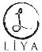

Geleceğe Yön Veren
BAŞARI ÖYKÜLERİ
ISBN:978-605-5143-27-5
Liya Kitap / 27
Yayına Hazırlayan
Coşkun Dokumacı
Genel Yayın Yönetmeni
Mustafa Demirer
Kapak Tasarımı
Leyla Çelik
I. Baskı: Haziran 2013
Baskı-Cilt: Melisa Matbaası
Sertfika No: 12088
Yayıncı Sertfika No: 18439
© Bu kitabın her hakkı saklıdır.
Yayıncının izni olmaksızın çoğalamaz,
kaynak göstermek suretyle alın, yapılabilir.
Liya Kitap
Dr. Mediha Eldem Sok. No: 60/2
Kızılay/ANKARA
Tel-Fax: (0.312) 432 14 89
Liya Kitap, Panama Yayıncılık’ın tescilli markasıdır.